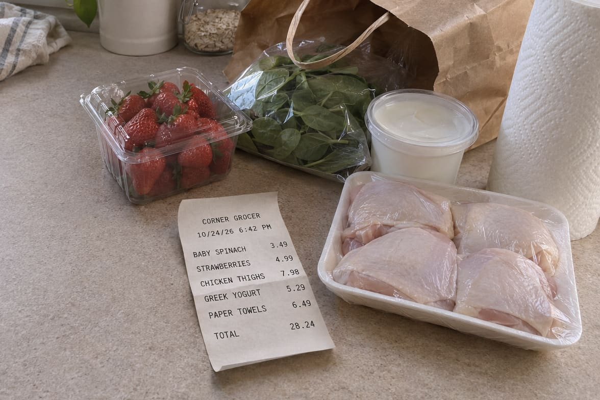
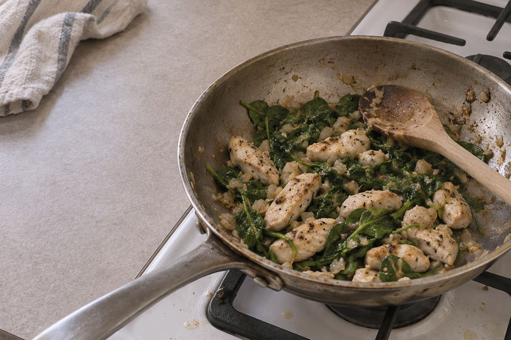
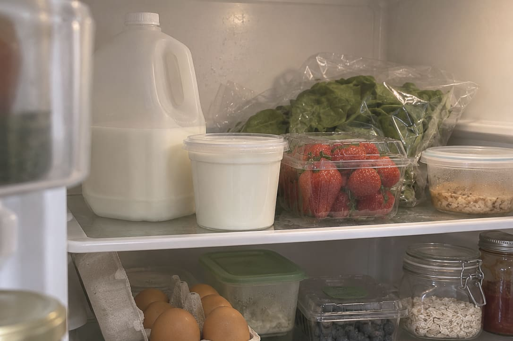

Snap your receipt
Eat better, waste less, spend less
Take a photo of your grocery receipt. Groceipt sorts your kitchen with what to use first on top, then turns it into dinner ideas and a shopping list.
The demo opens a sample kitchen in your browser, with nothing to download. The iPhone app is in beta.
You snap the receipt at home

Your Kitchen, about 30 seconds later
Produce
Meat & seafood
Dairy & eggs
Everything starts with one receipt
You snap it once and never type a thing. Groceipt reads every line and sends each food where it belongs, so your Kitchen, recipes, List, spending and Cart score all fill in at the same time.

-
Kitchen
Every food goes in with about how long it keeps, so you can see what to use first.
-
Cook
Recipes built around what you have, starting with whatever won’t last.
-
List
Anything you bought comes off your List by itself.
-
Money
What you spent in each section, and when a price you usually pay changes.
-
Cart score
A simple read on how balanced your groceries are, with no calorie counting.
That’s a pantry tracker, a recipe finder, a shopping list and a grocery budget in one app, all kept up to date by a receipt you were going to throw away anyway.
What to cook tonight, and what to buy next
Both follow the diets and allergies you set, and only you can change them.

Tonight
Recipes start from the food you already have, beginning with whatever needs using up.
Spinach & chicken skillet
- Chicken thighsUse soon
- Baby spinachUse soon
- Greek yogurt
- LemonAdd to list

Next trip
Tell it what you’re planning and it writes the list, minus anything already in your kitchen.
“Tacos twice and easy breakfasts”
- Tortillas
- Black beans
- Avocados
- Bananas
- Bread
Left out: chicken thighs and eggs. You already have them.
Add 5 to my listIt gets to know your kitchen as you go
-
Your first receipt
Your Kitchen fills itself in, and Cook already has ideas for the food you just bought, starting with what won’t last.
-
A few trips in
It picks up your rhythm. If you buy milk every week, your List suggests it right around when you’d buy it again, and Money notices when a usual price changes.
-
A month in
With a few weeks of carts it can offer an easy idea for a healthier one, and your weekly recap compares each week with your own, never anyone else’s.
There’s nothing to set up. Every receipt teaches Groceipt a bit more about what you buy, how often you buy it and what you pay, so its suggestions fit you better the longer you use it. Only the people in your household can see any of it.
No meal logging, no calorie counting
All it asks for is your receipt, about once a week. It never calls a food bad, and it won’t make you feel guilty about what got thrown out.

See it with a kitchen that’s already full
The demo gives you your own sample household with a few weeks of groceries already scanned, so you can try everything, even scanning a real receipt. There’s nothing to install and no sign-up.
Invites to the iPhone beta go out soon.